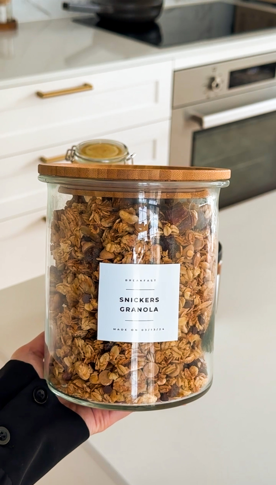

Moribyan

BREAKFAST | SNACKS
Snickers Granola
Perp Time:20 Minutes
Cook Time:25 minutes
Total Time:1 Hour
Yields:8
Pumpkin is not only for sweet desserts, it tastes incredible in
savory recipes as well like this creamy Pumpkin Pasta! The brown
butter and sage pair so well with the warm pumpkin flavor to create
the best fall pasta experience!
JUMP TO RECIPE
BREAKFAST | SNACKS
Snickers Granola
PRINT RECIPE
PIN RECIPE
Perp Time:20 Minutes
Cook Time:25 minutes
Total Time:1 Hour
Yields:8
Pumpkin is not only for sweet desserts, it tastes incredible in
savory recipes as well like this creamy Pumpkin Pasta! The brown
butter and sage pair so well with the warm pumpkin flavor to create
the best fall pasta experience!
INGREDIENTS
OATS MIXTURE
- 4 1/2 cups old-fashioned oats
- 1/3 cup maple syrup
- 1/4 cup brown sugar
- 3/4 teaspoon salt
- 1 1/2 teaspoon vanilla extract
- 2/3 cup coconut oil
- 1 egg white
OTHERS
- 1/2 cup chopped dates
- 1/3 cup chopped peanuts
- 1/2 cup chocolate chips
- 1/4 cup peanut butter chips
Instructions
-
Preheat oven to 350°F.
-
To a small bowl, combine maple syrup, brown sugar, salt, vanilla
extract, coconut oil, and an egg white. Mix together well
-
In a large mixing bowl, add the oats and pour the "batter" in.
Use a rubber spatula to mix everything well so it's all coated
evenly.
-
Transfer to a large baking tray and spread out evenly in one
layer. Press down well to create a more chunky granola.
-
Bake for 20 to 23 minutes until golden and crispy all around.
Rotate halfway.
-
Take out of the oven and allow to cool completely, for around 30
minutes.
Break apart the granola into big chunks.
-
Add the chopped dates, peanuts, chocolate chips, and peanut
butter chips. Mix together.
-
Store in an airtight container to keep fresh and crispy to
enjoy!